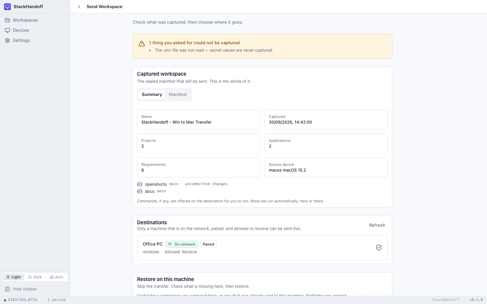
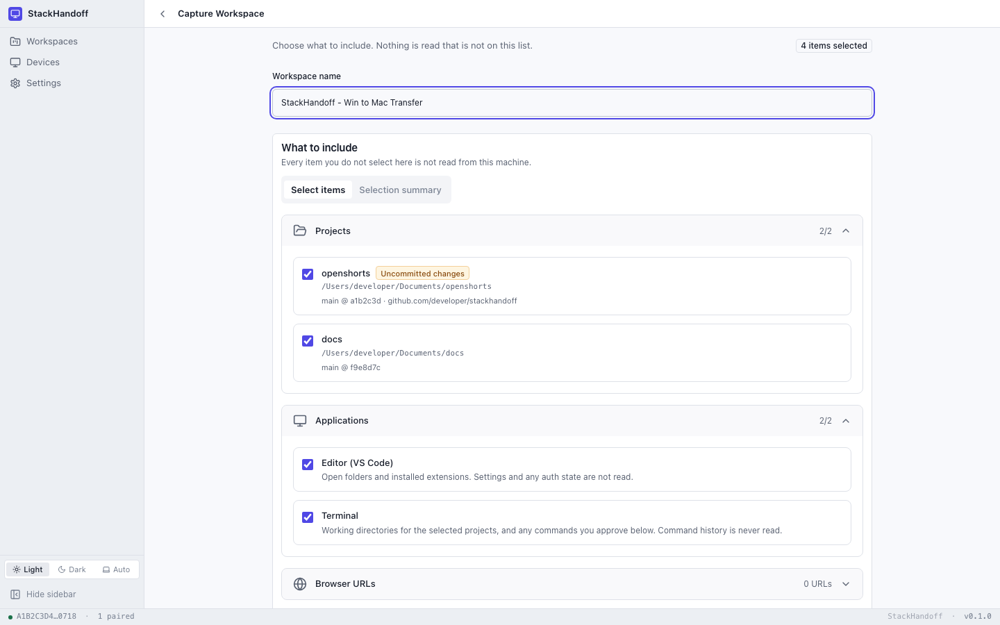
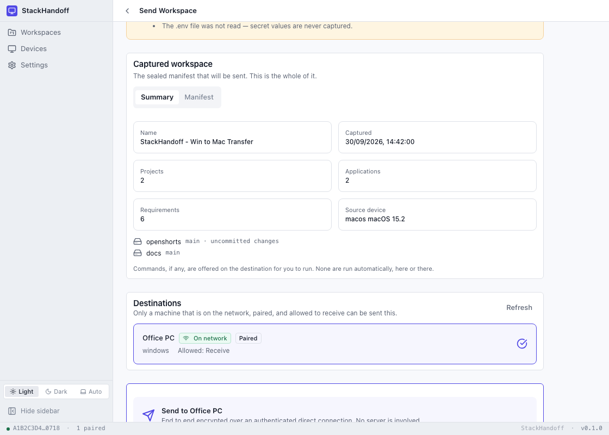
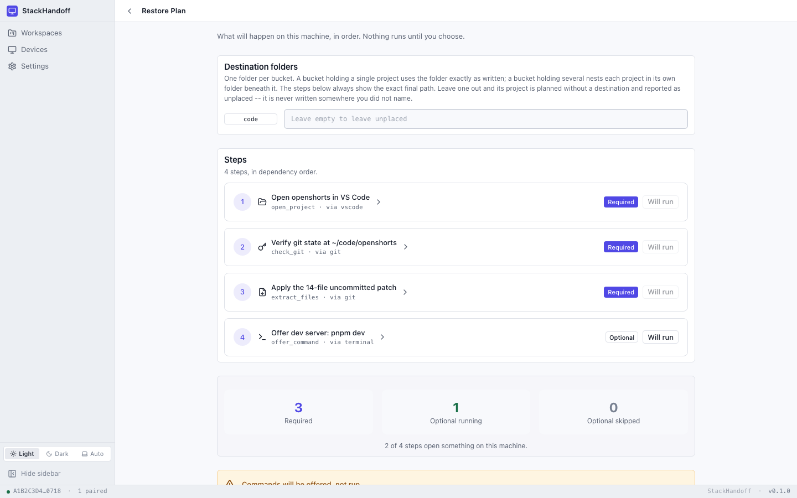
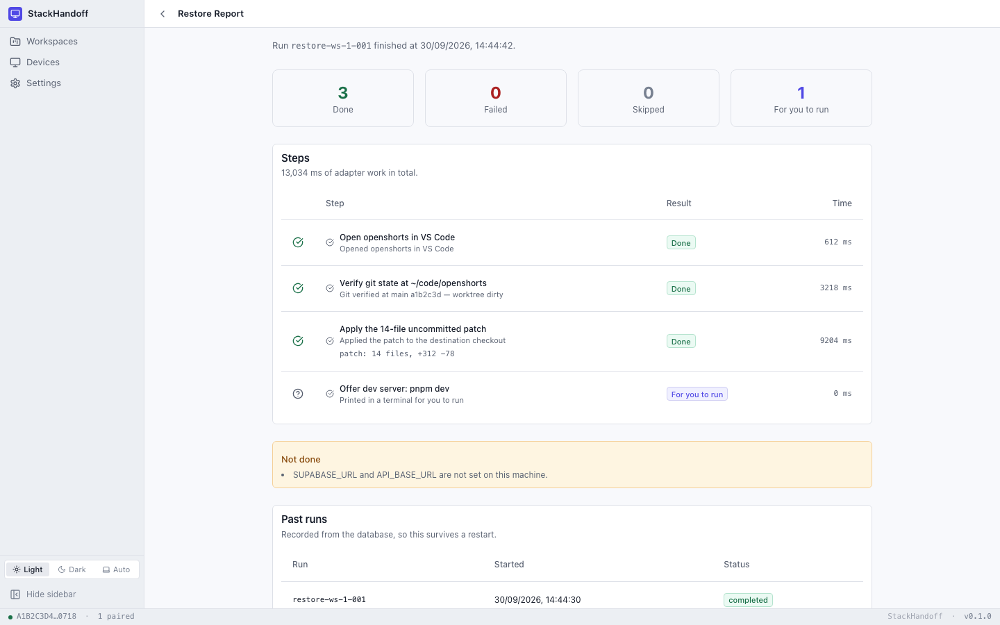

It does not copy your files
StackHandoff captures a description of your working environment — a manifest — and rebuilds the environment from it. Your source of truth stays where it is.
Peer-to-peer · No account · No server
StackHandoff moves the intent of a work session between your own machines. Open projects and their branches, installed tools, runtimes, environment variables, the accounts you were signed in to — and the uncommitted edits you left behind.
StackHandoff.dmg — Free and open source

The problem
A project is a folder, a branch, a runtime version, three extensions, an API key in your shell, a signed-in account, and a half-finished refactor. Copying the folder gets you none of the rest — so you spend the first hour of a new machine rebuilding the hour you just lost.
StackHandoff captures a description of your working environment — a manifest — and rebuilds the environment from it. Your source of truth stays where it is.
Every step is shown first, in plain English, before it runs. You review what was captured, skip what you don't want, and apply the rest.
Your machines find each other on the local network over mDNS and talk directly. There is nothing in the middle to trust with a copy of your setup.
Variable names travel, never values. Accounts are checked for and asked about. Keys, tokens and cookies are on an explicit never-captured list.
How it works
The source captures, the destination decides. Scroll to walk through it — every frame below is a real screenshot of the app, not an illustration.
Same network, same Wi-Fi. Each side advertises itself over mDNS and you confirm the other one's fingerprint by hand — read it aloud, out loud, if you want to be sure. Trust is per-device and revocable, and you choose what each one may do.
Pick your project folders, the apps you keep open in them, the runtimes and tools they need, and the URLs you want to reopen. Nothing outside that list is read from the machine — the screen tells you the count as you go.

You see exactly what is in the manifest before it leaves, sealed and encrypted. It goes straight to the other machine over the authenticated connection you already set up. No upload, no queue, no size limit that isn't your disk.

The destination builds a plan: every step in dependency order, with the exact final path it will write to. Required steps can't be skipped — a restore that silently drops one produces a workspace that looks right and isn't. Optional ones are your call.


git status survives the tripCloned repositories are rebuilt on the destination with the working-tree delta re-applied as a patch. The other machine shows exactly your changes — not a rewritten tree, not a fresh clone with your work missing.
$ git status
On branch main
Your branch is ahead of origin/main by 1 commit.
Changes not staged for commit:
modified: src/screens/TransferScreen.tsx
modified: src-tauri/crypto/src/keys.rsWhat travels
This is the whole of it. Everything below crosses the wire, and nothing that isn't on this list is ever read off the source machine.
{
"workspace": {
"name": "Workspace Clone - Win to Mac Transfer",
"portability": "cross_platform"
},
"projects": [
{
"name": "openshorts",
"destination_location_id": "code",
"git": {
"branch": "main",
"commit": "a1b2c3d",
"dirty_worktree": true,
"dirty_state_captured": true
}
}
],
"requirements": {
"runtimes": [{ "name": "node", "version": "22.13.1" }],
"cli_tools": [{ "name": "git" }],
"identities": [{ "service": "github", "needs_consent": true }],
"environment": { "presence_only": ["SUPABASE_URL", "API_BASE_URL"], "values_included": false }
},
"policy": {
"automatic_command_execution": false,
"secret_values_included": false
}
}Why it's different
Noise_IK with X25519 and AEAD. Both ends are authenticated from keys you exchanged by hand, and every byte is encrypted on the way.
Commands are printed into a visible terminal for you to run. No workspace arrives able to make this app execute something.
Denylisted files, missing runtimes, unset variables — anything that couldn't come across is listed in the report rather than quietly missing.
Built as a Mac app and a Windows installer. The manifest is cross-platform by construction — it describes intent, not paths.
Under the hood
Tauri shell, Rust workspace behind it, React in front. Every claim on this page is checkable in the repository.
Get StackHandoff